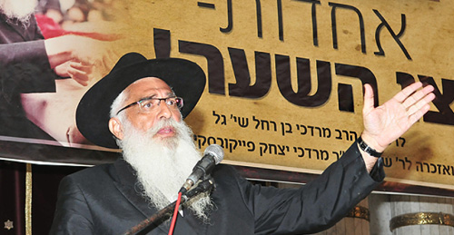

The Call of the Hour: To Really Do What We Can, in Unity!
We need to forget the nonsense of the machlokes of “Meshichist” and “Anti.” We need to join together as a unit committed to carrying out what the Rebbe wants. Just as the Chassidim of the Rebbe Rayatz, who knew that when they went to start an underground school it might land them a sentence of twent

To talk to Chassidim about “Achdus – the Call of the Hour” seems like a joke since there can’t be Chassidim without achdus and there can’t be achdus without Chassidim. If one of the components is missing, then neither one nor the other is reality.
On 27 Adar, a year and a half ago, I initiated the Ayeka Campaign that called for achdus among Lubavitcher Chassidim. I spoke to rabbanim and mashpiim about issuing a Kol Korei to Anash to sit together and farbreng. I did not dream of how much ingenuity would be needed to request of this rav to say this and that rav to say that and a mashpia to say thus and another one to agree to sit with this one, as though they were the worst of enemies.
Then I understood. There is a big problem within the Chabad movement, a problem that is not only ruining the atmosphere, but is causing disunity and dramatically affecting the Rebbe’s ideology, the Chassidic movement, the founders of Chassidus, the fathers of Chassidus and, I would dare say, even all the G’dolei Yisroel going back to our Avos and Adam HaRishon.
Because we, the present generation, were given this historic task: to bring the Geula to fruition, to expose our fellow Jews to it, starting with ourselves and our families, and then in wider circles to the rest of our Jewish brethren. In short, our mission is to rectify the entire world so that all serve Hashem. And it hasn’t happened!
As a Chassid who somehow always managed to maintain my independence, I never had any standing in the larger Chassidic community. To certain entities, I wasn’t even on the map. Whatever I did, I did quietly. This distance enabled me to maintain a broader perspective on what is going on in our midst.
THE IMPOSSIBLE CIRCUMSTANCES IN WHICH THE REBBE BEGAN HIS WORK
I would like to share a personal story about how I got involved with Chabad.
I belong to the generation that was born in Eretz Yisroel right after the Holocaust, to parents who arrived in the country as pioneers and patriots. My parents had mesirus nefesh to leave whatever they had and came here to dry up the swamps at a forsaken kibbutz called Dardera, which later came to be called HaShmura.
My parents eventually left the kibbutz to live in Yaffo where a high concentration of Bulgarians lived. I was born in the Ajami neighborhood.
Ajami was a neighborhood of immigrants, some from Arab countries and others from Western countries. My most poignant childhood memory is the screams that we heard at night from the homes of neighbors who had survived Auschwitz and Treblinka. These were bloodcurdling screams from people experiencing nightmares.
Also part of our upbringing was the indoctrination that a religious Jew with a hat and beard is a nebach, a helpless person. One bullet of a rifle could lead a hundred thousand shattered Jews like these to the gas chambers and wipe them out just like that.
This image of the religious Jew, as it was drawn in the hateful caricatures of Der Shturmer, is a pale weakling, trembling like a leaf, who needs merely to see a rifle and one can step all over him and his children. We were taught to oppose such a galus mentality, to no longer go as sheep to the slaughter. Six million people were murdered within a few years; it was unbelievable.
I began taking an interest in the “background music” with which the Rebbe began his nesius. It was a few years after the Holocaust, when people had left entire families behind in the crematoria. An entire nation had been decimated before their eyes in utter wretchedness, and then the Rebbe took over the leadership of the Jewish people.
What did he need to broadcast to this nation? Was it “Let us go back to the Siddur and say ‘Our Father, Father of Mercy?’” To once again say, “And You give life to all?” Or “You are great forever, Hashem, resurrecting the dead with great compassion, supporting the fallen, and healing the sick?” How could those survivors accept that? From what emotional place can a leader now turn to people who saw all those horrors with their own eyes?
Some people wanted to escape the image of the traditional Jew. They set up military organizations and relied on the power of the Kalashnikov and other weapons. No more trusting our Father in Heaven, G-d forbid. Others fled to the United States where they hoped to begin again in a new world. They did not want to hear about G-d and wanted to free themselves from the burden of religion.
This is the background in which the Rebbe began his leadership, and he did it brilliantly. With a handful of survivors who came as refugees from Russia, Lubavitchers for better or worse, with a tremendous depth of Chassidus, with tremendous achdus, with unparalleled mesirus nefesh, obviously as a continuation of the work of the Rebbe Rayatz, he began building a new empire of Judaism. The Rebbe began to, once again, operate the engine of growth of the Jewish people with a far-reaching vision: to bring this nation that had experienced such a trauma, that had gone through the labor pains and the terrible suffering that herald Moshiach, to an entirely new place, to Geula.
The Rebbe is the only one who saw the big picture. Other Admurim reacted in fear. Even those who began rebuilding built everything within walls so as to protect themselves from secular influences. The Rebbe came and plowed deeply with Chassidus and took it outward too, u’faratzta, with tanks everywhere, the ten mitzva campaigns, the twelve p’sukim, Tzivos Hashem, and sending shluchim around the world. Slowly, Moshiach began to heal the Jewish people. He succeeded in instilling and reestablishing the Torah perspective of how a Jew ought to behave, how the nations of the world ought to behave, how all of existence ought to operate, and – mainly – where we are heading.
In short, the Rebbe created a sort of GPS – based on the cosmic map of the Baal Shem Tov, and before him, the Arizal, and before him Rashbi, back to Adam HaRishon – for where we are coming from and to where we are going.
When I met the Rebbe in New York, believe me, I wasn’t that interested in his brilliance. What impressed me about the Rebbe was his leadership, his ability to create achdus, the likes of which I had never seen before.
When I arrived in Crown Heights, I observed how I was treated on Shabbos as well as weekdays, with warmhearted generosity. I saw people’s devotion to run and get a blanket for someone who was cold. There was a feeling of achdus and this was the most dominant element I encountered.
Then I understood. Among people there are always differences, for we all know that just as faces differ, so do opinions. It’s enough to peruse the Chumash to see Dasan and Aviram, the Misonenim, and Zimri ben Salu to know that there always has been machlokes and it will always be the case within a family. So how could the Rebbe demand achdus?
The answer lies in the fact that, from day one, the Rebbe waved a flag very high. He established that there is a much loftier mission that goes beyond the personal likes and dislikes of the Chassidim, and that we have the privilege of joining him in serving an ideal far greater than ourselves – the ideal of the redemption of the Jewish nation.
Then came 5751-5752, when the Rebbe intensified every aspect of the larger plan, including the rationale for the plan, the depth, which included Torah sources from where the Rebbe took these dramatic teachings. The Rebbe announced that every Jew would leave galus. Already in the 80’s, the Rebbe spoke about a king squandering all his treasures and giving all he has to his soldiers through the commanders, Ker a velt haint!
The Rebbe emphasized time and again how a person can transform the world today, even without a party and without money. This is what the Rebbe demanded of every one of us.
The more we learn the sichos of 5751-5752, the clearer the picture becomes. The Rebbe understood that we were in an enormously auspicious time to realize the ultimate dream of the Jewish people since we became a nation.
THEN I REALIZED – WE GOT CONFUSED!
Then suddenly the wheels came off the bus, machlokes broke out between those known as Meshichistim and those known as anti-Meshichistim. I was deeply saddened when, during the publicity for Ayeka, for achdus among us, I came across derogatory terms from all sides.
“We don’t want them.”
“Baalei t’shuva.”
“Contaminating the camp.”
“Heretics.”
“Erasing the Rebbe.”
“Let’s go back to the historic Chabad.”
I heard two strains that were polar opposites. Tragically, the disunity was not only in views but in hearts. How could there be such hatred among Chabad Chassidim? How?
What did the Rebbe ask? The Rebbe asked that even if you don’t believe the message of Moshiach, you cannot allow that to interfere with your conveying it to your family and people in your environment.
Then I understood: we got confused!
There are hidden treasures, treasures found in the sichos of 5751-5752, which are a distillation of the entire purpose of Chassidus. Not a distillation of the entire teachings of Chassidus, but a distillation of its role in the world; about what we are supposed to accomplish in the world, namely the revelation of Moshiach here, and in the world at large.
The call of the hour is not achdus. Achdus is the vessel! The call of the hour is “do all that you can.”
There are some rabbanim today who are Meshichistim and others who are anti-Meshichistim; there are mashpiim like this and like that. Each one received an assignment, so what is he doing? He is protecting his own “camp” as though that is the most important ideology there is.
This is an opportunity for each one of us, despite his views, despite the new political positioning that he finds himself in, to raise the flag of doing all that he can to bring Moshiach. We are all Chassidim of the Rebbe. We love him and want to do as he wishes. It was always the case that every time we spoke in a deep and straightforward way about our bond with the Rebbe and the desire to give back to the Rebbe just a drop of what he gives us, there was no Chassid whose heart did not melt and expand. There is no Chassid who does not want to give his all to the Rebbe, but most chassidim don’t know how.
So my suggestion is as follows:
Every person knows what “all that you can” means. Practically every person knows where he needs to apply mesirus nefesh, what red line he is willing to cross for the Rebbe. Each of us must strengthen his inner truth in order to strengthen the shlichus, to instill a spirit of Geula in his soul, in his household and his surroundings. So too, the mashpiim in their yeshivas and rabbanim in their neighborhoods need to rekindle the fire.
We need to forget what was, forget the nonsense of machlokes of Meshichist and Anti. We need to join together as a unit that wants to carry out what the Rebbe wants. First, out of a sense of personal obligation of a Chassid to the Rebbe, because this is what the Rebbe wants now. For this purpose, we need to set aside all personal desires, views, and wants. Just as with Chassidim of the Rebbe Rayatz, who knew that when they went to start an underground school it might land them a sentence of twenty years of hard labor, and yet this did not stop them, so too, we must nullify ourselves to the Rebbe and announce the Besuras Ha’Geula to the world.
We have no idea to what extent the world is ripe for the Besuras Ha’Geula. In recent days I showed friends to what extent the world is ready. I demonstrated it from many different angles, in science, music, art. Even the media, which seems so combative, is ready for a transformation.
It’s not only the nations who are being transformed, but all of culture. People are simply seeking renewed contact with G-d.
We have a historic task – to convey this to the world.
There is no doubt that the vehicle is achdus and love among Chassidim. If there is no love, there is nothing. In the words of the holy Zohar, “We (the existence of our fraternity) depend on love.” If we sit at a farbrengen and there is no love, there is nothing. There is no farbrengen. If Chassidim sit together and the feeling in one’s heart is not one of hugs and kisses, these are not Chassidim. Unity is the background music we need in order to be real soldiers of the Rebbe.
LOOKING OUT FOR THE KING
I want to end with a story that I’ve been living with for a year and a half, a story from the Gemara which speaks to me. It is with me day and night. I encountered this story for the first time in our Kollel in Ramat Gan when we were learning Meseches Sanhedrin daf 95.
In Navi (Shmuel I, perek 22) we read about Nov, the city of Kohanim. When Dovid was fleeing Shaul, he arrived in Nov. He was not concerned that Doeg HaAdomi, a great Torah scholar, would inform on him. All Dovid wanted was some food. Doeg reported to Shaul and said that Achimelech gave Dovid food. In his anger, Shaul sent Doeg to Nov to kill the entire city of Kohanim, which he did, except for one child who escaped. Doeg was punished and Shaul and his three sons were killed.
After this happened, Hashem came to Dovid and told him that the sin of killing the priests of Nov was his fault. Hashem asked Dovid to pick his punishment; either he would die or his children would perish. Dovid chose to protect his children and said better that he should die in battle. Hashem accepted this.
It was Erev Shabbos that day and Dovid went to hunt with hawks. He sent a large hawk into the air, which spotted a deer and signaled to Dovid where to pursue it on his royal horse. Hashem disguised Satan as this deer, which drew Dovid after it towards the land of the Plishtim. When he arrived in Plishtim, he suddenly met Yishbi, the brother of the giant Galyas whom Dovid had killed.
Yishbi caught him and said: You are the one who killed my brother Galyas. He put Dovid into an olive press and took a massive beam, placed it on Dovid’s neck and began to strangle him. The Gemara relates that a miracle took place and the earth beneath Dovid gave way and he remained alive.
One of Dovid’s generals, Avishai – for our purposes, let us say it was a Chassid of the Rebbe on Erev Shabbos, moments before the Geula – was washing his face when he saw a drop of blood in the water. Rav Pappa said that a dove was hovering and then dove full force into the water. Avishai realized this was a sign, and that the Jewish people, who are compared to a dove, were in danger. He immediately realized that this meant the king was in danger. He ran to the palace to look for him, but nobody knew where Dovid was. That is when he suspected something had happened to Dovid. He ran to the beis midrash and asked the sages whether it was permissible for him to ride the king’s horse. They said in a time of danger it was permissible.
He ran back to the palace and took Dovid’s steed, which was accustomed to miracles. As soon as he mounted it, he experienced K’fitzas HaDerech (the way was miraculously shortened for him). In all of Tanach it tells of three men who had the way shortened for them: Eliezer the servant of Avrohom, Yaakov Avinu, and Avishai ben Tzruya.
Avishai arrived in Plishtim and saw Orpa, the mother of Galyas and Yishbi and the other giant brothers. She immediately recognized him, and while she sat there and wove on her spinning wheel, she took the whorl and threw it at Avishai to crack his skull. Avishai moved aside and it missed him. Wanting to taunt him, she said, “Boy, bring me the spindle.” He picked up the spindle and smashed her head with it, killing her.
Avishai continued on his way and saw Yishbi mocking Dovid. What did Yishbi do? He grabbed Dovid and threw him in the air and stuck a javelin into the ground, intending that Dovid land on it and die. Avishai instantly said one of the names of Hashem and Dovid hovered in mid-air.
The Gemara asks why Dovid himself did not say Hashem’s name when he was greater than Avishai. From here the Gemara learns that one who is bound cannot free himself from jail.
There was a big klipa in the form of Yishbi. Dovid, the king of Yisroel, was hanging between heaven and earth. Avishai came and saw his Rebbe suspended in that way.
The Gemara goes on to say that Avishai asked Dovid, who was still hanging in the air, “What happened?” It was obvious to him that Dovid did not just “happen” to be ambushed and it wasn’t an accident that he crossed the border.
Dovid told him what happened, that Hashem blamed him for the sin of Nov and that he had taken the punishment upon himself rather than have his children suffer. Avishai asked Dovid to change his prayer and ask that the punishment be on his children and not on himself. Let your children take care of themselves! We want Moshiach now!
Dovid listened to him and changed the punishment. He came down to earth and they both began to run. Yishbi chased after them. They continued running, and Avishai said to Dovid, “We are two lions and he is a dog, and we can’t beat him?”
They turned around to Yishbi and Avishai said to him, “Your mother is in the grave.”
Hearing this, Yishbi’s strength failed him and they seized the moment and killed him. From that point, the Jewish people proclaimed, “Dovid should no longer go out with us to do battle, lest the candle of Yisroel be extinguished.”
***
This story affected me deeply. Who is the hero of this story? The tragic figure of the story is Dovid, the Rebbe. The Rebbe wants us to bring the Geula, but there are obstacles. Who knows what sin is behind it all, what confusion there is in the camp, how many children went off the derech since Gimmel Tammuz?
The hero is Avishai, the Chassid who, Erev Shabbos, a moment before the Geula, sees a drop of blood and a dove fluttering. He sees the situation and does not remain indifferent. The first thing he does is go to the beis midrash – Vessels of Tikkun – to ask the sages a question. He doesn’t do things on his own, but as soon as he gets their okay he immediately experiences a shortening of the way. From that moment on, he does not act with his own strength but with far more powerful kochos.
He sets out on a journey to find out what happened to Moshiach. He finds his Rebbe suspended between heaven and earth. He does not remain a “small minded” Chassid. He says one of the holy Names, i.e. he uses the lofty abilities given to him and says to the Rebbe, “Change your prayer.” He does all that he can and is able to bring the Rebbe back.
NO SMALL-MINDEDNESS
This is the story that captivated my heart. I share it with you so that each of you can think about it and take the lesson that we are meant to derive. Every Chassid today can help the Rebbe in a powerful way by taking out the hidden kochos he contains within himself. The Rebbe often said that each of us has prodigious strengths. We ourselves have no idea what we have.
What needs to be done today is to announce the Besuras Ha’Geula to yourself, your family, your relatives – your part of the world – and to invest every second, every minute, with devotion to the Rebbe’s cause. I affirm with perfect faith that if this miracle really happens and we overcome our machlokes and the despair that has penetrated our ranks, we can achieve the goal. We have the power to bring about the hisgalus of the Rebbe.
We can choose to be small-minded: Shall we open Igros or not; wear a Moshiach flag lapel pin or not; proclaim various phrases or not. But if that is what we are busy with, we won’t get anywhere in this war. We need to act like Avishai, to feel the Rebbe and to understand where we have gotten stuck, to try and rescue the tremendous revolution the Rebbe led by putting out heads together. This difficult time is an opportunity for each of us to reveal his inner strengths.
In the condition I am in today [Ed: R’ Gal is seriously ill] I’d like to add something of a personal nature. I made a commitment to spread the message of “do all that you can” in a spirit of achdus. They [Ed: the doctors] have put a sharp sword on my neck and said: This is the amount of time that you have left (B’derech HaTeva) to act. Go and take action. So I am working against the clock.
In my condition, things become clearer. There’s no question that if you come to someone and show him a challenge that is far greater than what he expected and in a much shorter time, then all the things which were hidden emerge. When a person commits to transforming every moment of his life into a day, and every day into a year, he finds that he has all the power to transform the situation. It’s a form of K’fitzas HaDerech. We each contain so much power; we simply need to make use of the time.
I would like to bless all of you that we use this achdus, this great love that fills our hearts for Melech HaMoshiach, and that we merit to see the king in all his glory in the third Beis HaMikdash, now!
Yechi Adoneinu Moreinu V’Rabbeinu Melech HaMoshiach L’olam Va’ed!
Rabbi Mordechai Gal. "The Call of the Hour: To Really Do What We Can, in Unity!." Beis Moshiach, no. 848 (August 31, 2012).